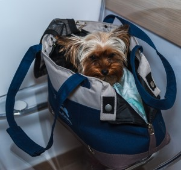
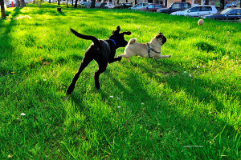

Пътуване в страни членки на Европейския съюз

{kind=link}
Драги стопани, ако Ви предстои пътуване и сте решили домашният ви любимец да Ви придружи, ще са ви необходими следните документи:
1. Внимателно попълнен международен паспорт, в който са отбелязани ваксинациите, датата на поставяне и номера на микрочипа (или татуировка, ако е поставена преди 07.2011);
2. Декларация за здравословното състояние на животното – попълва се от Вашия ветеринарен лекар 24 часа преди пътуването;
3. Валидна ваксина срещу бяс за животни над 3 месечна възраст (датата на поставянe на последната ваксина не трябва да е преди датата на поставяне на чипа).При първоначална ваксинация срещу бяс трябва да са изминали 21 дни от извършването на ваксинацията преди пътуването.
Допълнително изискване – само за пътуване във Великобритания, Малта, Финландия, Ирландия
4. Обезпаразитяването срещу ехинококоза трябва да е направено точно в периода от 120 до 24 часа

{kind=link}
преди предвиденото влизане на животното в посочените държави.
Допълнителни изисквания за пътуване в някои страни
извън Европейския съюз
-
САЩ
6. Здравен сертификат (издава се от ветеринарния Ви лекар и ще Ви послужи пред съответната авиокомпания).
-
Турция